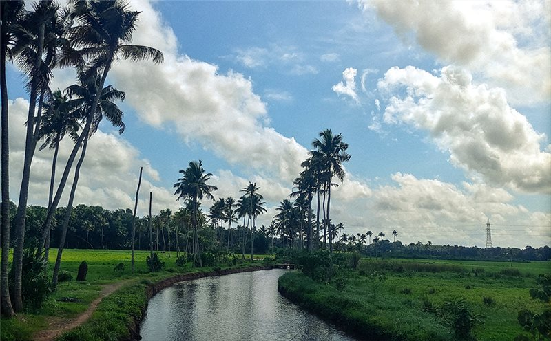
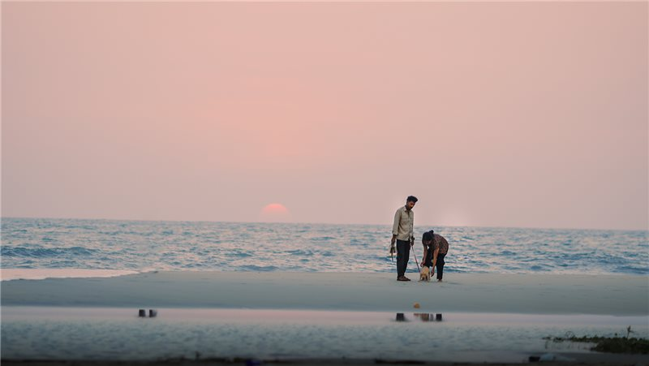
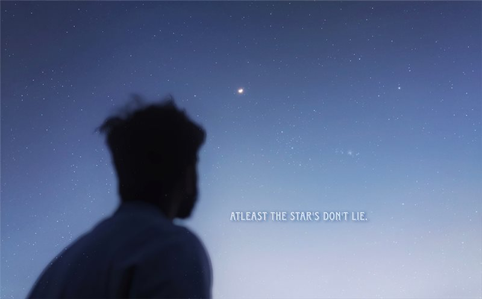
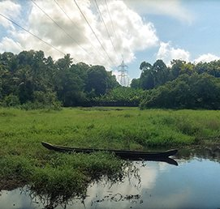
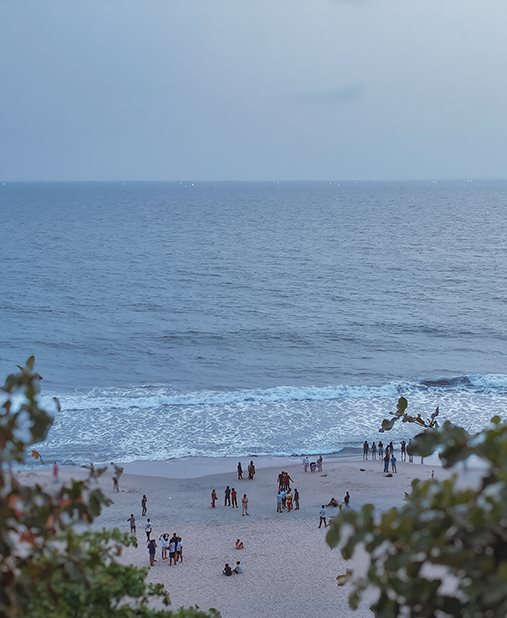
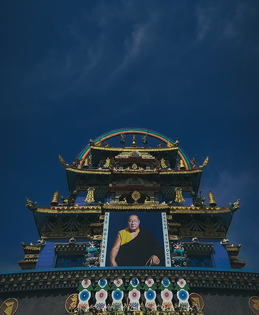
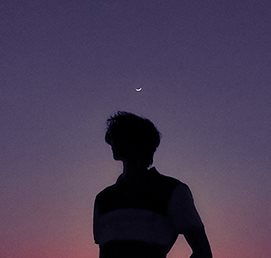
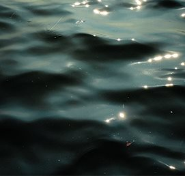

Along the waterways
Green edges, still water, and the routes that feel like home.
Not invented itineraries.
Honest notes from the archive.
These are honest notes from the archive: recurring places, changing light, and the small details that made me lift the camera. No invented itineraries—just photographs and what they continue to hold.

Three focused studies drawn from photographs already in the archive.
Green edges, still water, and the routes that feel like home.

People, tide, and the last color of the day.

Blue hour, small lights, silhouettes, and details in the dark.
Open a chapter.
Stay a little longer.
Water keeps returning to these photographs—not as a destination, but as part of the everyday landscape around me.
I am drawn to the quiet structure of palms, banks, reflections, and narrow passages of light. The scene rarely asks for attention; it rewards waiting instead.
Together, these frames form a continuing record of familiar Kerala landscapes and the different moods they carry.
Made slowly, close to home, whenever weather and light turn an ordinary route into something worth keeping.
The familiar can still surprise you when the light changes.


The shoreline gives every photograph a horizon, but the human moments are what make me stay.
Some frames are about scale; others are about two people sharing the edge of the day. I look for gestures that feel unarranged and for light that makes the ordinary briefly cinematic.
This is not a record of one trip. It is a growing coastal essay assembled across different visits and evenings.
Unhurried walks, changing weather, and enough time to watch the light disappear.
The best coastal photographs often arrive after the plan has ended.


Night changes the way I look. Shapes become simpler, color becomes more deliberate, and small details begin to lead the frame.
These photographs collect the moments after daylight stops doing the obvious work. A silhouette, a lit doorway, or a line across a pink sky becomes enough.
The series is still growing. Its connection is a way of seeing rather than a single place or date.
Made around blue hour and after dark, with patience for slower, quieter frames.
When the light falls away, attention becomes the most useful piece of equipment.


The light. The pause.
The frame I nearly missed.




“The familiar can still surprise you when the light changes.”Read this chapter ↗
“The best coastal photographs often arrive after the plan has ended.”Read this chapter ↗
“When the light falls away, attention becomes the most useful piece of equipment.”Read this chapter ↗
Three honest, ongoing studies assembled from photographs already in the archive.
For the light I want to take home.
Maps, quick notes, and the moments between photographs.
A place for names, directions, and things I do not want to forget.
A little extra time away from a socket.
There is always
another way home.